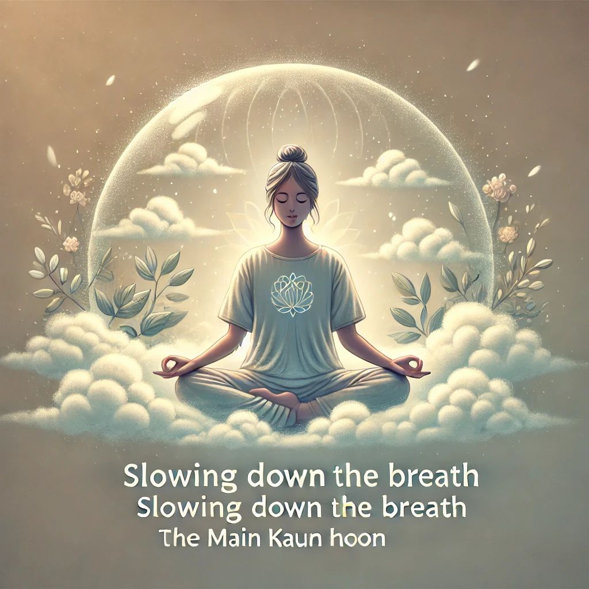
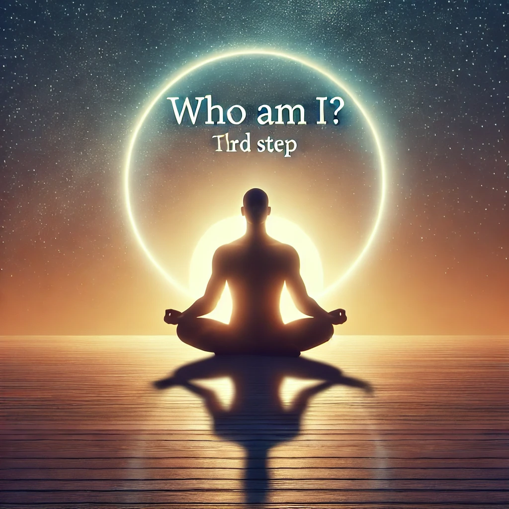

"আমি কে" ধ্যান
ওশোর "আমি কে" সিরিজ থেকে এই ধ্যানটি শ্বাসের সচেতনতা এবং আত্ম-অনুসন্ধানের উপর ভিত্তি করে। লক্ষ্য হল শ্বাস, আবেগ এবং আত্মপরিচয়ের প্রশ্নের মধ্যে সম্পর্ক পর্যবেক্ষণ করে গভীরতর সচেতনতার স্তরে পৌঁছানো।
কিভাবে অনুশীলন করবেন: অডিও ডাউনলোড করুন এবং এই পদক্ষেপগুলি অনুসরণ করুন।
1. আপনার শ্বাসে মনোযোগ দিন
আরামদায়কভাবে বসুন, চোখ বন্ধ করুন এবং আপনার প্রাকৃতিক শ্বাসের উপর মনোযোগ দিন। দেখুন কীভাবে মানসিক অবস্থা আপনার শ্বাসকে প্রভাবিত করে। এটিকে নিয়ন্ত্রণ করার চেষ্টা করবেন না, কেবল একজন দর্শক হিসেবে থাকুন।

2. শ্বাস ধীরে নিন
ধীরে ধীরে শ্বাস নেওয়ার গতি কমান। লক্ষ করুন কিভাবে ধীর ও গভীর শ্বাসের সাথে রাগ বা উদ্বেগের মতো আবেগগুলি কম শক্তিশালী হয়ে ওঠে।
3. প্রশ্ন করুন "আমি কে?"
শ্বাসের প্রতি মনোযোগ রেখে, "আমি কে?" এই প্রশ্নটি করতে শুরু করুন। এটি আপনাকে আপনার সত্যিকারের স্বকে অভিজ্ঞতার মাধ্যমে আপনার পরিচিতি ও ভূমিকা অতিক্রম করতে সহায়তা করবে।
4. প্রতিদিন অনুশীলন করুন
ওশো প্রতিদিন সকালে এবং